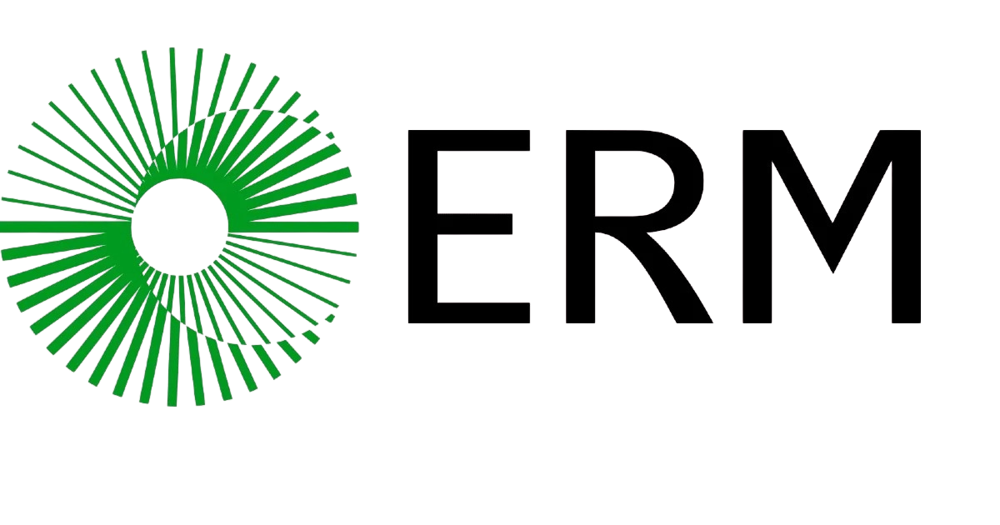
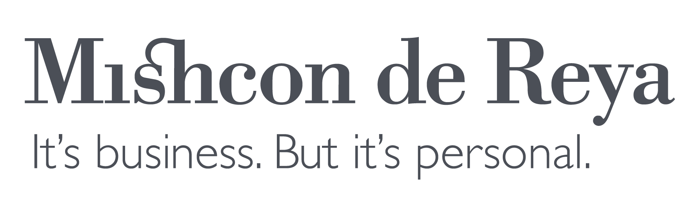

AI product and delivery
Choosing worthwhile use cases, shaping the product, building the system and getting it safely into production.
I build AI and automation systems, then help organisations turn them into work that people can actually use.
My work spans product design, data, engineering and adoption across sustainability, legal services, higher education and AI research.
Latest writing: When AI Agents Become Apps
A focused video call for students, graduates and career switchers navigating data, analytics, AI and related roles.
The advice draws on my record of 102 tracked roles across 90+ companies, including 48 documented interview processes and 4 offers.
Turning technical possibility into something useful has taken me through enterprise AI, research, legal services, consulting and sustainability.



I have worked on the core analytics team at Google DeepMind, led data science in a major international law firm, built AI research systems with Oxford, and now own AI and automation applications end to end at ERM.
That range has made me practical about the work. A promising model is only one part of the problem. The product, data, workflow, governance, deployment and adoption all have to hold together before an AI system creates value.
I tend to work across boundaries rather than inside one narrow technical lane. The common thread is making difficult AI and data work clearer, buildable and usable.
Choosing worthwhile use cases, shaping the product, building the system and getting it safely into production.
Understanding the real workflow before deciding where agents, orchestration or conventional automation should help.
Designing reporting, pipelines and decision tools that make fragmented operational data easier to trust and use.
Helping teams understand the system, change how work happens and build enough confidence to keep using it.
Different contexts, but each project required technical decisions to be made in the service of a real organisation and the people using the result.
Reviewed and challenged the proposed Business Analytics curriculum, bringing current employer expectations and applied analytics practice into the programme design.
Contribution Industry feedback on curriculum relevance, graduate capabilities and the balance between technical depth and business application.
Designed and built an AI research platform for climate-litigation analysis, combining document processing, entity extraction, retrieval and an AWS deployment pipeline.
Visit CLARADelivery A working research system spanning 1.2 million pages, OCR, GraphRAG, Python, Docker, AWS services and automated deployment rather than a standalone model demonstration.
Led the move from legacy SSRS reporting to Power BI, bringing business data together and creating a clearer route to self-service analytics across operational teams.
Impact Reduced report redundancy by 70 percent and enabled more teams to work directly with trusted analytics rather than relying on a fragmented reporting estate.
Feedback from people who have worked with me across education, research and enterprise data.
Her strength as a highly motivated, people-centred collaborator enables her to bring real value to any organisation, team or individual she works with.
She brings impressive technical skills, acquires new skills quickly, and brings strategic leadership and direction to projects.
She is exceptional at solving problems and turning ideas into clear, measurable outcomes. Exactly what you want in a data team.
Email is the simplest place to start. A short note about the context and what is currently stuck is enough.